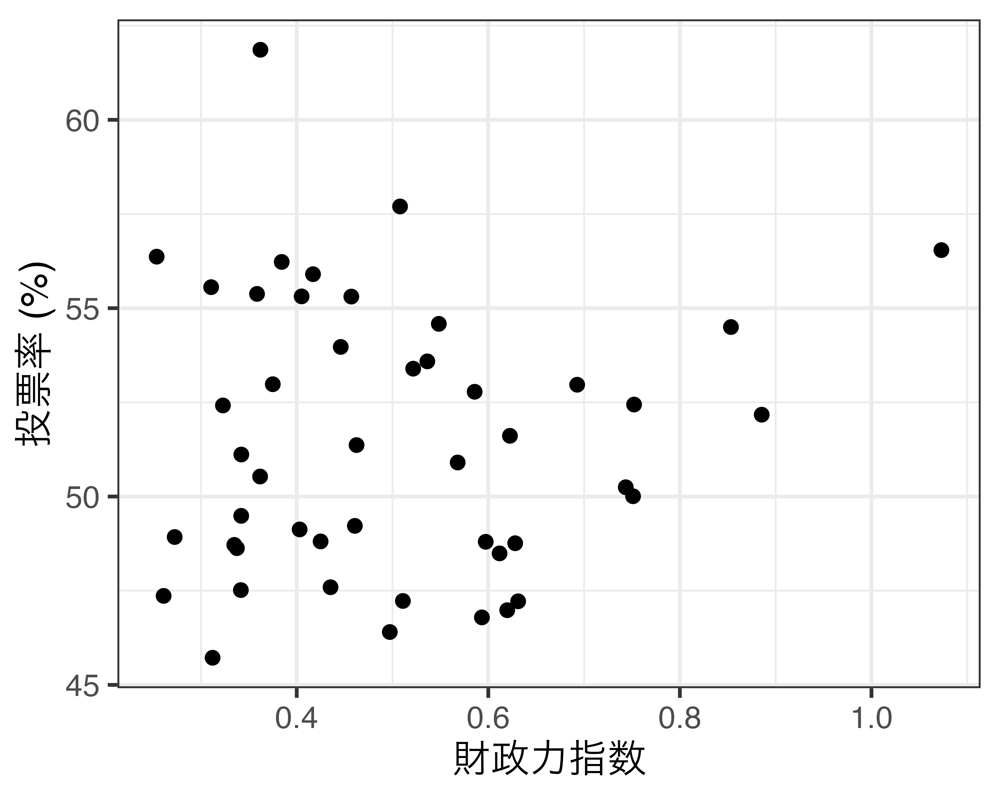
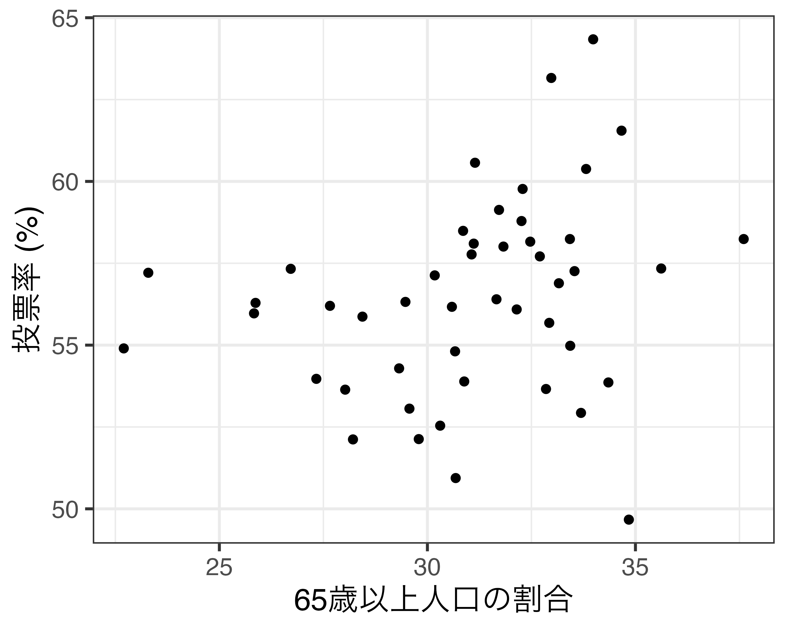
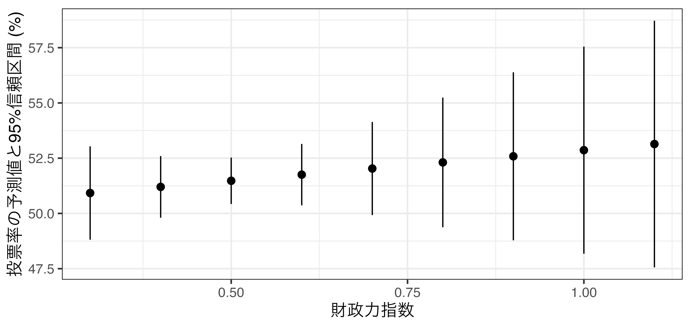

| ID | 都道府県 | 自民得票率 | 財政力指数 | 高齢者比 | 第一次産業従事者比率 |
|---|---|---|---|---|---|
| 1 | 北海道 | 32.82 | 0.43523 | 29.19036 | 6.9950367 |
| 2 | 青森県 | 40.44 | 0.34082 | 30.21411 | 12.0293305 |
| 3 | 岩手県 | 34.90 | 0.35156 | 30.48886 | 10.6440222 |
| 4 | 宮城県 | 36.68 | 0.61443 | 25.85974 | 4.3617982 |
| 5 | 秋田県 | 43.46 | 0.30876 | 33.94153 | 9.6208687 |
| 6 | 山形県 | 42.49 | 0.35108 | 30.90099 | 9.1944841 |
| 7 | 福島県 | 33.82 | 0.53346 | 28.77917 | 6.4827959 |
| 8 | 茨城県 | 40.64 | 0.63726 | 27.10318 | 5.6398160 |
| 9 | 栃木県 | 38.78 | 0.63993 | 26.34192 | 5.5164637 |
| 10 | 群馬県 | 42.06 | 0.62459 | 28.08067 | 4.9627352 |
| 11 | 埼玉県 | 32.30 | 0.76593 | 25.17737 | 1.5923560 |
| 12 | 千葉県 | 37.79 | 0.77827 | 26.16599 | 2.7855056 |
| 13 | 東京都 | 34.37 | 1.10133 | 23.17111 | 0.3872702 |
| 14 | 神奈川県 | 34.92 | 0.90832 | 24.20895 | 0.8338070 |
| 15 | 新潟県 | 43.66 | 0.45107 | 29.99366 | 5.7604046 |
| 16 | 富山県 | 44.16 | 0.46651 | 30.82200 | 3.2660962 |
| 17 | 石川県 | 48.09 | 0.48499 | 28.06994 | 3.0190636 |
| 18 | 福井県 | 45.29 | 0.39353 | 28.89013 | 3.7142163 |
| 19 | 山梨県 | 37.36 | 0.39625 | 28.73440 | 7.1834624 |
| 20 | 長野県 | 35.27 | 0.49610 | 30.39107 | 9.0571664 |
| 21 | 岐阜県 | 39.71 | 0.53444 | 28.52990 | 3.0858851 |
| 22 | 静岡県 | 37.47 | 0.71954 | 28.19953 | 3.8015628 |
| 23 | 愛知県 | 34.32 | 0.92079 | 24.21588 | 2.0715470 |
| 24 | 三重県 | 33.67 | 0.58545 | 28.32133 | 3.5781354 |
| 25 | 滋賀県 | 37.85 | 0.54974 | 24.42326 | 2.6453739 |
| 26 | 京都府 | 31.18 | 0.58423 | 27.78059 | 2.0519098 |
| 27 | 大阪府 | 22.12 | 0.76505 | 26.47324 | 0.5047311 |
| 28 | 兵庫県 | 31.71 | 0.63363 | 27.29242 | 1.9681756 |
| 29 | 奈良県 | 33.51 | 0.42074 | 28.80949 | 2.6246661 |
| 30 | 和歌山県 | 39.61 | 0.32692 | 30.97829 | 8.7569556 |
| 31 | 鳥取県 | 41.62 | 0.26553 | 29.86492 | 8.7820593 |
| 32 | 島根県 | 48.24 | 0.25199 | 32.70654 | 7.7575701 |
| 33 | 岡山県 | 37.87 | 0.51755 | 28.89047 | 4.5740178 |
| 34 | 広島県 | 39.93 | 0.60157 | 27.77751 | 3.0909015 |
| 35 | 山口県 | 46.75 | 0.44031 | 32.20171 | 4.8076461 |
| 36 | 徳島県 | 38.44 | 0.32946 | 31.14240 | 8.1905828 |
| 37 | 香川県 | 44.07 | 0.47572 | 30.15175 | 5.2630765 |
| 38 | 愛媛県 | 43.57 | 0.42524 | 30.81198 | 7.3426155 |
| 39 | 高知県 | 37.01 | 0.25820 | 32.99393 | 11.4168481 |
| 40 | 福岡県 | 36.52 | 0.63402 | 26.09215 | 2.7790311 |
| 41 | 佐賀県 | 43.53 | 0.34093 | 27.79119 | 8.4424369 |
| 42 | 長崎県 | 41.70 | 0.32607 | 29.75835 | 7.4224487 |
| 43 | 熊本県 | 46.54 | 0.39854 | 28.91214 | 9.5894910 |
| 44 | 大分県 | 39.44 | 0.37071 | 30.69506 | 6.6783603 |
| 45 | 宮崎県 | 40.11 | 0.33278 | 29.59453 | 10.7896612 |
| 46 | 鹿児島県 | 45.97 | 0.33303 | 29.56849 | 9.3186355 |
| 47 | 沖縄県 | 27.82 | 0.33241 | 19.76016 | 4.5100859 |
ミクロ政治データ分析実習
第6回 データ収集
2023-05-18
完成したデータ
| ID | Pref | Finance | Over65 | Turnout |
|---|---|---|---|---|
| 1 | 北海道 | 0.46217 | 32.26170 | 58.79 |
| 2 | 青森県 | 0.35801 | 33.69179 | 52.93 |
| 3 | 岩手県 | 0.37248 | 33.81424 | 60.38 |
| 4 | 宮城県 | 0.62649 | 28.43901 | 55.87 |
| 5 | 秋田県 | 0.32157 | 37.60177 | 58.24 |
| 6 | 山形県 | 0.37896 | 33.98365 | 64.34 |
| 7 | 福島県 | 0.54482 | 31.82748 | 58.01 |
| 8 | 茨城県 | 0.65584 | 30.30695 | 52.54 |
| 9 | 栃木県 | 0.64821 | 29.56807 | 53.06 |
| 10 | 群馬県 | 0.63796 | 30.88517 | 53.89 |
| 11 | 埼玉県 | 0.77024 | 27.33047 | 53.97 |
| 12 | 千葉県 | 0.77845 | 28.02414 | 53.64 |
| 13 | 東京都 | 1.15019 | 23.29183 | 57.21 |
| 14 | 神奈川県 | 0.88898 | 25.86952 | 56.29 |
| 15 | 新潟県 | 0.47506 | 32.97734 | 63.16 |
| 16 | 富山県 | 0.48457 | 32.92857 | 55.68 |
| 17 | 石川県 | 0.51759 | 30.17642 | 57.13 |
| 18 | 福井県 | 0.42058 | 31.06232 | 57.77 |
| 19 | 山梨県 | 0.40857 | 31.14433 | 60.57 |
| 20 | 長野県 | 0.52762 | 32.28879 | 59.77 |
| 21 | 岐阜県 | 0.55930 | 31.11373 | 58.10 |
| 22 | 静岡県 | 0.72648 | 30.66518 | 54.81 |
| 23 | 愛知県 | 0.91216 | 25.83282 | 55.97 |
| 24 | 三重県 | 0.60941 | 30.58887 | 56.17 |
| 25 | 滋賀県 | 0.57552 | 26.71561 | 57.33 |
| 26 | 京都府 | 0.59466 | 29.47203 | 56.32 |
| 27 | 大阪府 | 0.79157 | 27.65828 | 56.20 |
| 28 | 兵庫県 | 0.64914 | 29.32041 | 54.29 |
| 29 | 奈良県 | 0.43666 | 31.72145 | 59.13 |
| 30 | 和歌山県 | 0.33779 | 33.42466 | 58.24 |
| 31 | 鳥取県 | 0.28689 | 32.47166 | 58.16 |
| 32 | 島根県 | 0.26570 | 34.66566 | 61.55 |
| 33 | 岡山県 | 0.53481 | 30.67966 | 50.94 |
| 34 | 広島県 | 0.61848 | 29.79257 | 52.13 |
| 35 | 山口県 | 0.45738 | 34.84154 | 49.67 |
| 36 | 徳島県 | 0.32716 | 34.34980 | 53.86 |
| 37 | 香川県 | 0.48747 | 32.14574 | 56.09 |
| 38 | 愛媛県 | 0.44767 | 33.43253 | 54.98 |
| 39 | 高知県 | 0.27382 | 35.61885 | 57.34 |
| 40 | 福岡県 | 0.65820 | 28.21122 | 52.12 |
| 41 | 佐賀県 | 0.35551 | 30.85767 | 58.49 |
| 42 | 長崎県 | 0.34825 | 33.16014 | 56.89 |
| 43 | 熊本県 | 0.42692 | 31.66006 | 56.40 |
| 44 | 大分県 | 0.39540 | 33.53593 | 57.26 |
| 45 | 宮崎県 | 0.35767 | 32.85051 | 53.66 |
| 46 | 鹿児島県 | 0.35338 | 32.70230 | 57.71 |
| 47 | 沖縄県 | 0.37469 | 22.70253 | 54.90 |
可視化は第12回講義以降で解説


線形回帰分析は後期の「マクロ政治データ分析実習」で
Call:
lm(formula = Turnout ~ Finance + Over65, data = df)
Residuals:
Min 1Q Median 3Q Max
-7.2182 -1.6627 0.1581 1.5689 7.1454
Coefficients:
Estimate Std. Error t value Pr(>|t|)
(Intercept) 57.31951 8.20293 6.988 1.19e-08 ***
Finance -4.40402 3.52987 -1.248 0.219
Over65 0.04544 0.21608 0.210 0.834
---
Signif. codes: 0 '***' 0.001 '**' 0.01 '*' 0.05 '.' 0.1 ' ' 1
Residual standard error: 2.923 on 44 degrees of freedom
Multiple R-squared: 0.09674, Adjusted R-squared: 0.05568
F-statistic: 2.356 on 2 and 44 DF, p-value: 0.1066